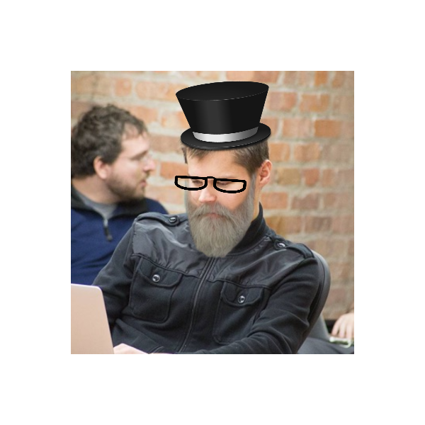

How to

Pair Program
Motivation
-
Prevent discouragement
Highlight some challenges
-
Increase productivity
Share some tips
What are we talking about?
-
Highlight Challenges
-
Case Studies
lots of case studies
What are we not talking about?
-
How Docker works
-
Docker internals
-
Docker in production
What is Docker?
-
Like a VM
but
thinner -
Runs "containers"
on the surface each container is the same, but on the inside anything goes
-
Containers are (mostly) portable
Linux, Mac OS, Windows
What Docker is not?
-
Virtual Machine
you typically want one "thing" per container
-
Process Migration
be rails s
What else is Docker not?
-
Operating System
not ... yet ...
-
New song by Bruce Springsteen
Terminology
-
Image
sort of like a
class -
Container
a
newinstance of aclass
Questions?
Demo Time!
Case Studies
Case Study - Blazing Fast Tests
--datadir /dev/data
Can't really do this on the shared CI database
Case Study - Update Binaries in Production
without having to update binaries in production
production binaries == development binaries
Case Study - Pollution-free Test Runs
1. Spin up docker containers
2. Run tests
3. Remove EVERYTHING!
Case Study - Cache Parts of Your "build"
FROM ruby:2.4.0 WORKDIR /app ADD Gemfile /app/Gemfile RUN bundle install ADD . /app
Case Study - "Try something" on Linux
docker run -it ubuntu:14.04 docker run -it ubuntu:16.04 docker run -it debian:jessie docker run -it debian:wheezy docker run -it debian:darek docker run -it alpine:3.5 # 2MB docker run -it alpine:3.4 # 2MB
More on next slide →
Case Study - "Try something" on Linux
no more VM
no more ssh
no more AWS free-tier*
echo "1\n2\n3\n4\n5" | docker run --rm -i ubuntu:14.04 shuf
Case Study - Pristine Jenkins
- Java 7
- Java 8
- Maven (with independent repos per project)
- Node 7.x
- Node 6.x
- Node 0.something
- ImageMagick
- MySQL
- Memcached
- SOLR
- Mongo
More on next slide →
Case Study - Pristine Jenkins
- Firefox (different versions)
- Chrome (different versions)
- Selenium
- AWS CLI*
- Ansible (no more install boto, boto3, ansible)*
- ! Jenkins
- ! Git
- ! Python + Pip (so we can install Docker Compose)
Case Study - PDF to Booklet Printing
The MacTeX-2016 package can be obtained over the internet for free by clicking on the following link:
MacTeX.pkg [ approximately 2.8G - 09 October 2016 ]
https://www.tug.org/mactex/downloading.html
Case Study - Google
Robert McFrazier
Solution Engineer, Google
@ DockerCon 2016
Other Potential Uses
Questions?
Easy-to-run Prototype
or an alternative to staging environments
Many Projects, Many Databases
MySql
PostgreSQL
MongoDB
Cassandra
MariaDB
DarekDB
oh yeah, version x.y but not version w.z
Global Database Configurations
innodb_file_per_table: true root_password: password
v.s.
innodb_file_per_table: false root_password: u-♥-ruby
Backup Entire "System"
docker commit my-db db-backup # run crazy migration script here if [ $something_went_wrong = "true" ]; then docker stop my-db docker run --name my-db db-backup fi
Many, Many More
Questions?
The Fine Print

Some FYIs
- Development overhead
- Looking Around: "Where are the logs?"
- Container removed == everything is gone
- Learning Curve
- Entire team on Docker
- Young technology == "stupid" problems
- Can't setup a network if Google is not your DNS
Security
-
"any given docker image ... can access ANY file on your host"
(Docker 0.11) shocker.c - "Solaris Zones and FreeBSD jails *are* safe for multi-tenant environments and have been for years (decades?)" - Jeff Ramnani
- But who has Solaris and who develops on FreeBSD? Docker makes things accessible, at the cost of security.
Run images (and Docker) at your own risk
Questions?
Testimonials
Testimonials
Docker is like oil, it removes friction.
Dr. Docker
Testimonials
Docker has made deployment and testing much easier for me for certain things.
Kevin Buchanan
Testimonials
Docker helps keep my machine clean.
Kofi Gumbs
Testimonials
Since I started using Docker, I haven't had to brew install a single thing. Hello Docker, Bye Bye Brew!
Mike Knepper
Testimonials
Docker is like a Q-tip®, you can use it for so many things.
Dr. Docker
Testimonials
I launched a container, and I liked it.
Alexandru Codreanu
Thank You
/